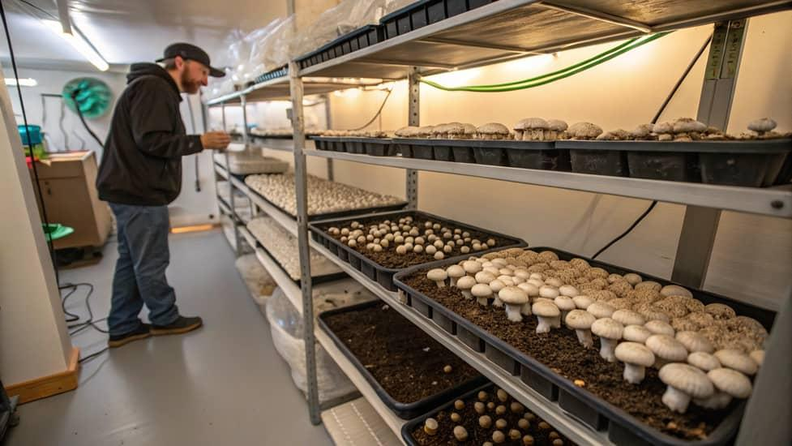
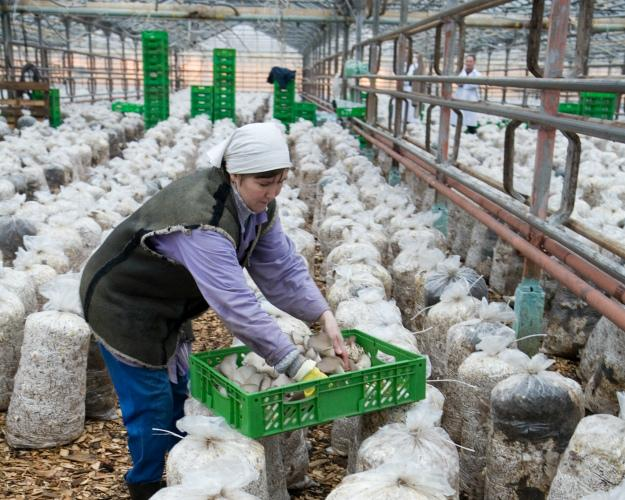
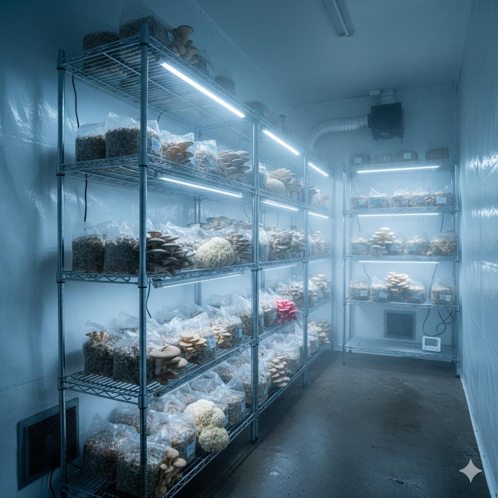
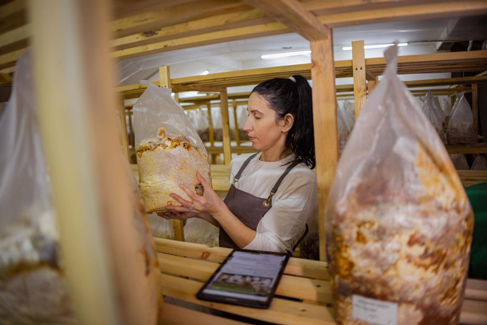
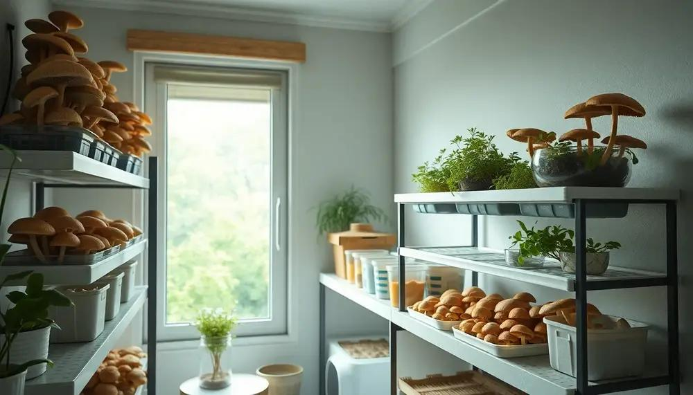
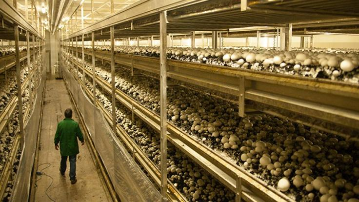
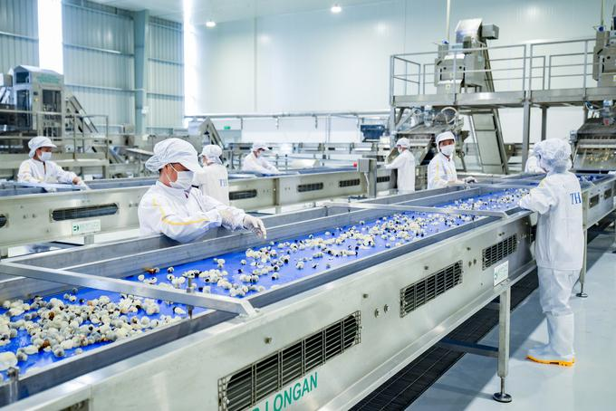
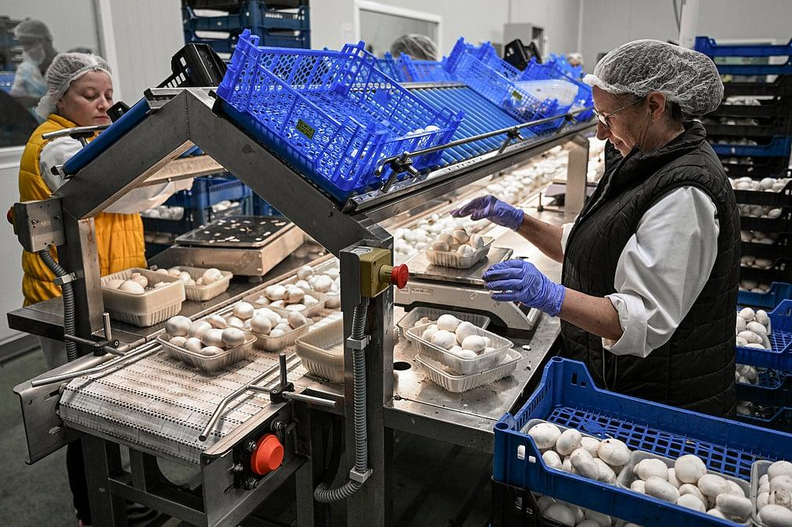

<!DOCTYPE HTML>
<!--
	Editted by Gifted Hand's
-->
<html>
	<head>
		<title>Mushroom Farming Business: How to Start : Word Inform</title>
		<meta charset="utf-8" />
		<meta name="viewport" content="width=device-width, initial-scale=1, user-scalable=no" />
<meta name="description" content="Learn how mushroom farming can grow from a small home-based venture into a profitable commercial business. Discover startup tips, income opportunities, and strategies for long-term success">
<meta name="keywords" content="mushroom farming, small business ideas, profitable farming business, oyster mushrooms, button mushrooms, agribusiness, mushroom cultivation, commercial farming, organic farming, food business, business ideas 2026">
<meta name="auhor" content="Gifted Hand's">
		<link rel="stylesheet" href="assets/css/main.css" />
<link rel="stylesheet"
        href="https://cdnjs.cloudflare.com/ajax/libs/font-awesome/6.7.2/css/all.min.css">
	
	<script async src="https://pagead2.googlesyndication.com/pagead/js/adsbygoogle.js?client=ca-pub-3208874347294298"
     crossorigin="anonymous"></script>
		
	</head>
<style>

.sentence-case {
  text-transform: lowercase;
}

.sentence-case::first-letter {
  text-transform: uppercase;
}

img {
  max-width: 100%;
  height: auto; /* Maintains original aspect ratio */
}
.share-container{
    background:#fff;
    padding:30px;
    border-radius:15px;
    box-shadow:0 5px 20px rgba(0,0,0,.15);
    text-align:center;
    width:420px;
}

.share-container h2{
    margin-bottom:20px;
}

.share-buttons{
    display:grid;
    grid-template-columns:repeat(2,1fr);
    gap:12px;
}

.share-buttons button{
    border:none;
    padding:14px;
    border-radius:8px;
    color:#fff;
    cursor:pointer;
    font-size:16px;
    transition:.3s;
}

.share-buttons button:hover{
    transform:translateY(-3px);
    opacity:.9;
}

.facebook{background:#1877F2;}
.twitter{background:#000;}
.whatsapp{background:#25D366;}
.linkedin{background:#0077B5;}
.telegram{background:#229ED9;}
.reddit{background:#FF4500;}
.copy{background:#555;}

@media(max-width:500px){
    .share-container{<a href=href="../index.html" class="logo"><strong>
									Word Inform</strong> Site</a>
									<ul class="icons">
										<li><a href="https://x.com/super120TG" target="_blank" class="icon brands fa-twitter"><span class="label">Twitter</span></a></li>
										<li><a href="https://www.facebook.com/profile.php?id=61591540144551" target="_blank" class="icon brands fa-facebook-f"><span class="label">Facebook</span></a></li>
										<li><a href="#" class="icon brands fa-snapchat-ghost"><span class="label">Snapchat</span></a></li>
										<li><a href="#" class="icon brands fa-instagram"><span class="label">Instagram</span></a></li>
										<li><a href="#" class="icon brands fa-medium-m"><span class="label">Medium</span></a></li>
									</ul>
								</header>

							<!-- Banner -->
								<section id="banner">
									<div class="content">
										<header>
<p id="demo"></p>
<script>
const d = new Date(); 
document.getElementById("demo").innerHTML = d;
</script>
											<h1>Welcome to<br />
											<font style="color:blue">WORD INFORM</font></h1>
											<p class="sentence-case" style="color:#3aabfa";>
Word Inform site was created to offer a simpler solution for small businesses to improve their online presence through collaborative teamwork, web optimizing strategies, and community support.</p>
										</header>
<marquee style="color:red">Good day to you. Daily quote: Our Father, who art in heaven,
hallowed be thy name;
thy kingdom come;
thy will be done;
on earth as it is in heaven.
Give us this day our daily bread.
And forgive us our trespasses,
as we forgive those who trespass against us.
And lead us not into temptation;
but deliver us from the evil one.
For thine is the kingdom,
the power and the glory,
for ever and ever. Amen.<font style="color:red;">Matthew 6:9-13</font> Matthew 6:1-34
6  “Take care not to practice your righteousness in front of men to be noticed by them; otherwise you will have no reward with your Father who is in the heavens. 2  So when you make gifts of mercy, do not blow a trumpet ahead of you, as the hypocrites do in the synagogues and in the streets, so that they may be glorified by men. Truly I say to you, they have their reward in full. 3  But you, when making gifts of mercy, do not let your left hand know what your right hand is doing, 4  so that your gifts of mercy may be in secret. Then your Father who looks on in secret will repay you.  5  “Also, when you pray, do not act like the hypocrites, for they like to pray standing in the synagogues and on the corners of the main streets to be seen by men. Truly I say to you, they have their reward in full. 6  But when you pray, go into your private room and, after shutting your door, pray to your Father who is in secret. Then your Father who looks on in secret will repay you. 7  When praying, do not say the same things over and over again as the people of the nations do, for they imagine they will get a hearing for their use of many words. 8  So do not be like them, for your Father knows what you need even before you ask him. 9  “You must pray, then, this way: “‘Our Father in the heavens, let your name be sanctified. 10  Let your Kingdom come. Let your will take place, as in heaven, also on earth. 11  Give us today our bread for this day; 12  and forgive us our debts, as we also have forgiven our debtors. 13  And do not bring us into temptation, but deliver us from the wicked one.’ 14  “For if you forgive men their trespasses, your heavenly Father will also forgive you; 15  whereas if you do not forgive men their trespasses, neither will your Father forgive your trespasses.t 16  “When you fast, stop becoming sad-faced like the hypocrites, for they disfigure their faces so they may appear to men to be fasting. Truly I say to you, they have their reward in full. 17  But you, when fasting, put oil on your head and wash your face, 18  so that you may not appear to be fasting to men but only to your Father who is in secret. Then your Father who looks on in secret will repay you. 19  “Stop storing up for yourselves treasures on the earth, where moth and rust consume and where thieves break in and steal. 20  Rather, store up for yourselves treasures in heaven, where neither moth nor rust consumes, and where thieves do not break in and steal. 21  For where your treasure is, there your heart will be also. 22  “The lamp of the body is the eye. If, then, your eye is focused, your whole body will be bright. 23  But if your eye is envious, your whole body will be dark. If the light that is in you is really darkness, how great that darkness is! 24  “No one can slave for two masters; for either he will hate the one and love the other, or he will stick to the one and despise the other. You cannot slave for God and for Riches. 25  “On this account I say to you: Stop being anxious about your lives as to what you will eat or what you will drink, or about your bodies as to what you will wear. Does not life mean more than food and the body than clothing? 26  Observe intently the birds of heaven; they do not sow seed or reap or gather into storehouses, yet your heavenly Father feeds them. Are you not worth more than they are? 27  Who of you by being anxious can add one cubit to his life span? 28  Also, why are you anxious about clothing? Take a lesson from the lilies of the field, how they grow; they do not toil, nor do they spin; 29  but I tell you that not even Solʹo•mon in all his glory was arrayed as one of these. 30  Now if this is how God clothes the vegetation of the field that is here today and tomorrow is thrown into the oven, will he not much rather clothe you, you with little faith? 31  So never be anxious and say, ‘What are we to eat?’ or, ‘What are we to drink?’ or, ‘What are we to wear?’ 32  For all these are the things the nations are eagerly pursuing. Your heavenly Father knows that you need all these things. 33  “Keep on, then, seeking first the Kingdom and his righteousness, and all these other things will be added to you. 34  So never be anxious about the next day, for the next day will have its own anxieties. Each day has enough of its own troubles. … Stay safe and connected for more Bible Verses.
 </marquee>
	


									</div>
									
								</section>

							<!-- Section -->
								<section>
									<header class="major">
										<h2>Complete Information: Mushroom Farming Business: How a Small-Scale Farm Can Grow into a Multi-Million-Dollar Enterprise</h2>
									</header>
									<div class="posts">
										<article>
											<a href="news/article3.html" class="image"></a>
											<h3>Mushroom Farming Business: How a Small-Scale Farm Can Grow into a Multi-Million-Dollar Enterprise
</h3>
											<p>
Revised on July 26, 2026.</p>
<p>
The global demand for fresh, healthy, and organic food continues to rise, making <b>mushroom farming</b> one of the most profitable small-scale businesses to start in 2026. Unlike many agricultural ventures, mushroom farming requires relatively little land, has a short production cycle, and can generate income throughout the year.</p>

	
<p>
Many successful mushroom companies started with a single growing room before expanding into large commercial farms that supply supermarkets, restaurants, hotels, and food processing companies. With proper planning and consistent quality, a small mushroom farm can develop into a large-scale agribusiness.</p>

	<a href="news/article3.html" class="image"></a>
<h3>
Why Mushroom Farming Is a High-Demand Business</h3>

<p>People around the world are becoming more health-conscious, increasing demand for nutritious foods that are low in fat and rich in vitamins. Mushrooms are widely used in:</p><ul><li>

Restaurants</li><li>
Hotels</li><li>
Supermarkets</li><li>
Pizza chains</li><li>
Fast-food businesses</li><li>
Food manufacturers</li><li>
Export markets</li></ul><p>

Popular mushroom varieties include:</p><ul><li>

Oyster mushrooms</li><li>
Button mushrooms</li><li>
Shiitake mushrooms</li><li>
Lion's Mane mushrooms</li><li>
King Oyster mushrooms</li></ul><p>

<a href="news/article3.html" class="image"></a>


As vegetarian and vegan diets become more common, mushrooms are also gaining popularity as a meat alternative.</p>
<h3>
Why Start Small?</h3>


<p>
One of the biggest advantages of mushroom farming is that you don't need a large farm to begin.
</p>

<a href="news/article3.html" class="image"></a>

<p>
Many entrepreneurs start with:</p>
<ul><li>
One spare room</li><li>
A small greenhouse</li><li>
A rented storage space</li><li>
A backyard growing shed</li></ul>
<p>
This allows beginners to learn production techniques while keeping startup costs manageable.</p>
<h3>
How Mushroom Farming Works</h3>
<p>
The production process generally includes:
</p><p>
1. Preparing the Growing Medium
</p><p>
Mushrooms grow on organic materials such as straw, sawdust, or agricultural waste.</p>
<p>
2. Adding Mushroom Spawn</p>
<p>
Spawn is introduced into the growing medium under clean conditions.
</p><p>
3. Incubation</p>
<a href="news/article3.html" class="image"></a>


<p>

The bags or containers are stored in a controlled environment where the mushroom mycelium spreads through the substrate.
</p><p>
4. Fruiting</p><p>

Temperature, humidity, and fresh air are adjusted to encourage mushroom growth.</p><p>

5. Harvesting</p>
<p>
Most mushrooms are ready for harvest within a few weeks, allowing for multiple production cycles each year.

<a href="news/article3.html" class="image"></a>

</p><h3>
Ways to Make Money</h3><p>

<a href="news/article3.html" class="image"></a>

Mushroom farming offers several income opportunities.
</p><p>
You can sell:</p>
<ul><li>
Fresh mushrooms</li><li>
Dried mushrooms</li><li>
Mushroom powder</li><li>
Mushroom seasoning</li><li>
Mushroom snacks</li><li>
Mushroom growing kits</li><li>
Mushroom spawn</li><li>
Organic compost made from used substrate</li></ul>
<p>
Diversifying your products can increase revenue and reduce dependence on a single market.</p>


<a href="news/article3.html" class="image"></a>

<h3>


How to Grow into a Large Business</h3><p>

Many successful farms expand gradually by:</p>
<h4>
Increasing Production</h4><p>

Build additional growing rooms as demand increases.</p><h4>

Hiring Employees</h4><p>

Recruit staff to handle cultivation, harvesting, packaging, and logistics.</p><h4>

Supplying Retail Stores</h4><p>

Partner with supermarkets, grocery stores, and local markets.</p>
<h4>
Selling to Restaurants</h4><p>

Restaurants often need a consistent supply of fresh mushrooms.</p>
<h4>
Creating a Brand</h4><p>

Develop attractive packaging and build customer recognition.
</p><h4>
Exporting Products</h4><p>

Some mushroom varieties have strong demand in international markets.
</p>

<a href="news/article3.html" class="image"></a>


<h3>
Benefits of Mushroom Farming</h3><p>

Some of the biggest advantages include:</p>
<ul><li>
Low land requirements</li><li>
Fast production cycles</li><li>
Year-round income potential</li><li>
Growing demand worldwide</li><li>
Environmentally friendly production</li><li>
Scalable business model</li><li>
Multiple product options</li><li>
Potential for export</li></ul>
<h3>
Challenges</h3><p>

Like any business, mushroom farming has challenges.
</p><p>
These include:</p><ul><li>

Maintaining hygiene</li><li>
Controlling temperature and humidity</li><li>
Preventing contamination</li><li>
Managing consistent quality</li><li>
Building reliable distribution channels</li></ul><p>

Proper training and good management practices can help overcome these challenges.</p><h3>

Tips for Success</h3><p>

To build a successful mushroom business:</p><ul><li>

Learn modern cultivation techniques</li><li>
Start with a small operation</li><li>
Keep your growing environment clean</li><li>
Focus on consistent quality</li><li>
Build relationships with buyers</li><li>
Invest profits back into expansion</li><li>
Create a recognizable brand</li><li>
Use social media to market your products</li></ul>
<h3>
Future Opportunities</h3><p>

The future of mushroom farming looks promising. Demand is increasing for organic foods, functional mushrooms, and plant-based ingredients. Advances in controlled-environment agriculture are making production more efficient, while consumers continue to seek healthy and sustainable food choices.</p>
<p>
Entrepreneurs who focus on quality, innovation, and reliable supply can grow from a small local producer into a regional or even international brand.
</p>
<h3>
Conclusion
</h3><p>
Mushroom farming is one of the best small-scale businesses that can grow into a large-scale enterprise. It combines relatively low startup costs with strong market demand and multiple revenue streams. With careful planning, continuous learning, and a commitment to quality, a small mushroom farm can evolve into a profitable business supplying supermarkets, restaurants, food processors, and export markets.</p><p>

For anyone looking to start a business with long-term growth potential, mushroom farming is an excellent opportunity in 2026 and beyond.</p>
	
										</article>

							
						</div>
					</div>

				

							<!-- Menu -->
								<nav id="menu">
									<header class="major">
										<h2>Menu </h2>
									</header>
									<ul style="color:blue;">
									<li><a href="../index.html">Homepage</a></li>
										<li><a href="../bibleverse.html">Daily Bible Verse</a></li>
										<li><a href="../elements2.html">Latest News Update</a></li>										<li>
											<span class="opener">MESSAGES</span>
											<ul>
												<li><a href="../goodmorning.html">Good Morning Messages </a></li>
												<li><a href="../goodnight.html">Good Night Messages</a></li>
												<li><a href="inspiration.html">Inspirational Quotes</a></li>
											
											</ul>
										</li>
										<li><a href="../about.html">About Us</a></li>
										<li><a href="../contact.html">Contact Us</a></li>
<li><a href="../login.html">Sign In</a></li>
<li><a href="../signup.html">Sign Up</a></li>
									</ul>
								</nav>

							<!-- Section -->
								<section>
									<header class="major">
				<hr>						<h2>Other News Update</h2>
									</header>
									<div class="mini-posts">
										<article>
											<a href="complete1.html" class="image"><br><br>
											<h3>JAMB EXTENDS DEADLINE FOR 2026 DIRECT ENTRY</h3></a>
										</article>
										<article>
											<a href="article4.html" class="image"><br><br>
											<h3>How to Make Money Online: Proven Ways to Build a Sustainable Income
</h3></a>
										</article>
										
									</div>
										<hr>
									
									<ul class="actions">
										<li><a href="../elements2.html" class="button">More</a></li>
									</ul>
								
								</section>

							<!-- Section -->
								

							<!-- Footer -->
								<footer id="footer">
									<p class="copyright">&copy; Word Inform site. All rights reserved. Word Inform SITE <a href="https://wordinform.site">WORDINFORM.SITE</a>. Gifted Hand's Computer Services</a>.</p>
								</footer>

						</div>
					</div>

			</div>

		<!-- Scripts -->
			<script src="assets/js/jquery.min.js"></script>
			<script src="assets/js/browser.min.js"></script>
			<script src="assets/js/breakpoints.min.js"></script>
			<script src="assets/js/util.js"></script>
			<script src="assets/js/main.js"></script>

	</body>
</html>
